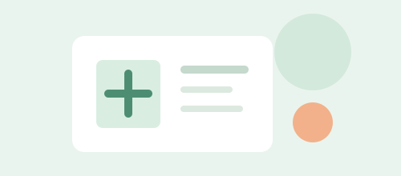
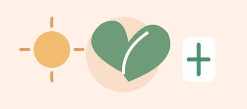
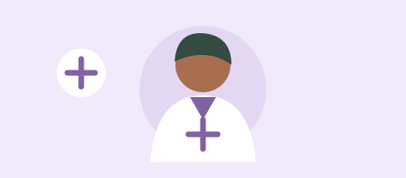

Community Health Screening
General check-up, blood pressure and diabetes screening.
▣ 24 Nov 2026⌖ Community Wellness Centre
Explore community health events and choose the care that fits your needs.

General check-up, blood pressure and diabetes screening.

Nutrition advice, healthy lifestyle guidance and BMI checks.

Private consultations and preventive health information.
Camp dates, locations, eligibility and availability shown here are illustrative sample information. Confirm details with the camp organizer before attending.